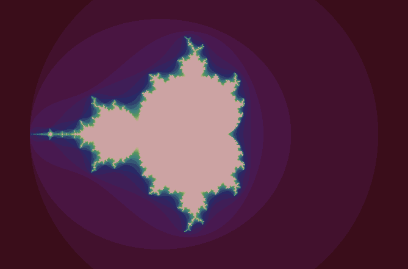

Classic Interface #
Before discussing a practical example of using threads, we write tests to get comfortable using their API.
Testing the API #
In Java, threads are instances of the Thread class. The following test shows how to start two threads and wait for them to be finished.
void testHowToStartAndJoinThreads() {
final List<Integer> results = new ArrayList<>();
final Thread one = new Thread(() -> results.add(1));
final Thread two = new Thread(() -> results.add(2));
assertFalse(one.isAlive());
assertFalse(two.isAlive());
assertTrue(results.isEmpty());
one.start();
two.start();
// assertTrue(one.isAlive());
// assertTrue(two.isAlive());
try {
one.join();
two.join();
} catch (InterruptedException e) {}
assertFalse(one.isAlive());
assertFalse(two.isAlive());
assertEquals(2, results.size());
}
Threads can be created by passing a
Runnable
instance to the constructor.
Here, we use
lambda expressions
to create corresponding Runnable instances concisely.
The method isAlive returns true when called on a thread
that has been started but not yet completed execution.
We can see that created threads are not started automatically.
They are executed only after calling their start method.
Whether the commented out assertions succeed or not
depends on whether the started threads complete their execution
before the main program checks if they are alive.
You can try to remove the comment signs
to see how the tests behaves on your computer.
It may or may not pass based on the order of execution.
We get predictable results only after waiting
for both threads to complete.
The join method blocks the calling thread
if the thread it is called on is still alive.
After executing join on both started threads
the calling thread checks again if they are alive.
They are not alive anymore,
because the calling thread was blocked
as long as they were alive.
At this point we can also be sure
that both threads have written to the list of results.
We cannot predict the order of elements in the results list
which is non-deterministic and depends on the order of execution.
Blocking operations usually throw an InterruptedException when the calling thread is interrupted (more on that below.) In this test, we do not expect the calling thread to be interrupted, so we ignore the exception.
The next test shows how to interrupt a started thread.
void testHowToClearInterruptStatus() {
final Thread thread = new Thread(() -> {
while (!Thread.interrupted()) {
try {
TimeUnit.SECONDS.sleep(1);
} catch (InterruptedException e) {
return;
}
}
});
thread.start();
thread.interrupt();
try {
thread.join();
} catch (InterruptedException e) {}
assertFalse(thread.isInterrupted());
}
When started, the created thread runs circles in a loop
as long as it is not interrupted.
The static method Thread.interrupted
checks if the calling thread has been interrupted.
To spare processor cycles,
we use sleep to block the thread most of the time.
As sleep is a blocking operation,
it can throw an InterruptedException.
If it does, we terminate the loop using return.
After calling start,
the calling thread immediately interrupts the started thread
by calling its interrupt method.
In general, the interrupt method does not stop the execution
of the thread it is called on.
It merely asks the thread to complete its execution prematurely
by setting its interrupt status flag.
We have already seen that blocking methods
react to interruptions with an InterruptedException.
Threads that do not call blocking methods
should test for interruptions themselves.
Maybe surprisingly, the interrupt status flag may sometimes be cleared.
By convention, operations that throw an InterruptedException
clear the flag, and so does Thread.interrupted.
As a result, checking the flag for a second time
might not yield the same result as the first time.
In our test, the flag will be cleared
(either by sleep or by Thread.interrupted)
after the started thread is finished.
As a consequence, testing it again yields false.
Note that the second test uses the instance method
isInterrupted rather than the static method
because it needs to check the interrupt status flag
of a different thread.
Unlike the static method,
the instance method does not clear the interrupt status flag.
We could use Thread.currentThread().isInterrupted()
if we wanted to check the interrupt status of the calling thread
without clearing it.
Rendering fractal images #
We now turn to a more realistic example of using threads in Java.
Fractal images can be computed by running a potentially costly computation
to determine each of their pixels.
The class FractalApp starts a graphical application
that can be used to compare different approaches to execute such computations.
It has been used to create the following picture of the mandelbrot fractal.

We will not discuss how this application represents fractal images
or how it manages to continuously update the shown image with partial renderings
as they are computed.
Interested readers are encouraged to look at the code on their own.
Here, we will focus on how to compute pixels.
This task is abstracted with the Renderer interface
which we will get to know as we go along.
The simplest renderer does not use separate threads
but simply computes each required pixel one at a time.
It is implemented in the class StreamRenderer
which uses stream programming to go through all pixels.
public class StreamRenderer extends AbstractRenderer {
@Override
public boolean render(final Box box) {
final Thread origin = Thread.currentThread();
return render(box, origin::isInterrupted);
}
public boolean render(final Box box, final Interruptible origin) {
if (image == null || raster == null) {
return false;
}
box.pixels().forEach(pixel -> {
if (!origin.wasInterrupted()) {
raster.setPixelColor(pixel, image.colorAt(pixel));
}
});
return !origin.wasInterrupted();
}
}
Renderers have access to
- an
imagethat determines the color of pixels - and a pixel
rasterwhere pixel colors can be written to.
The render method is parameterized with a Box
which determines which pixels of the raster should be rendered.
This will be useful later, when rendering different parts
of the picture with different threads.
The second parameter of the render method is an instance of Interruptible,
which is a functional interface we defined ourselves
that has one method wasInterrupted.
If no Interruptible instance is provided,
the isInterrupted method of the current thread is used as default.
What’s interesting about this renderer is that it
- computes all pixels sequentially
- and stops performing costly computations when the calling thread is interrupted.
The result of the render method signifies whether rendering was completed.
Rendering with multiple threads #
Now, we implement a renderer
that uses multiple threads to render different parts of the image.
The new renderer uses the renderer defined before
for rendering each individual part.
Here is its render method.
public boolean render(final Box box) {
final List<Thread> threads = box.split() //
.map(part -> (Runnable) () -> renderer.render(part)) //
.map(Thread::new) //
.collect(Collectors.toList());
fork(threads);
return join(threads);
}
The renderer is an instance of StreamRenderer defined before.
The method fork starts every thread in the given list.
private void fork(final List<Thread> threads) {
threads.forEach(Thread::start);
}
The join method is a little more complicated.
It waits for the given threads to finish
and passes on interruptions.
private boolean join(final List<Thread> threads) {
while (threads.stream().anyMatch(Thread::isAlive)) {
if (Thread.currentThread().isInterrupted()) {
interruptAll(threads);
return false;
}
try {
TimeUnit.SECONDS.sleep(1);
} catch (InterruptedException e) {
interruptAll(threads);
return false;
}
}
return true;
}
The method interruptAll interrupts all threads in the given list.
private void interruptAll(final List<Thread> threads) {
threads.forEach(Thread::interrupt);
}
The FractalApp allows to color different parts of the image differently
based on which thread was used to render it.
The following picture has been created by the MultiThreadedRenderer.
Note that different parts with the same color have still been rendered by different threads because a new thread was created for each part.
Task: Trying out the fractal app #
Try out the FractalApp with different renderers
by editing the corresponding class accordingly.
You can zoom in on a point by clicking into the picture.
With a right click you can zoom out around the clicked point.
The more you zoom in the longer rendering will take. The picture will be updated continuously until rendering is complete. If you click into the picture before rendering is completed, a new rendering thread is started and the previous one is interrupted. The program prints timing information about completed and aborted rendering threads to standard output. Try out zooming while rendering is still active and check if renderers of different types really are aborted.
Task: Simpler handling of interruptions #
The StreamRenderer class provides an alternative render method
that takes a thread as argument to check for interruptions.
Change the MultiThreadedRenderer to use this method
passing a custom Interruptible instance.
Simplify the join method to call join on each started thread
without passing on interruptions.
Can the MultiThreadedRenderer still be aborted successfully
after your change?